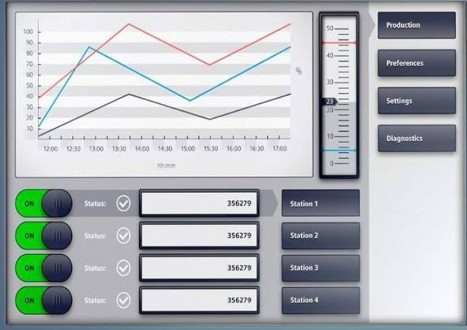
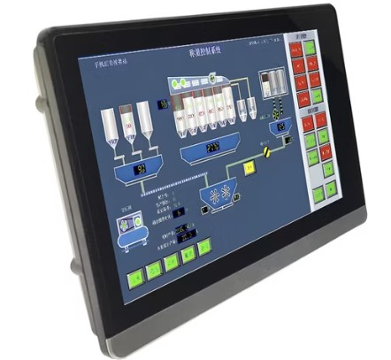
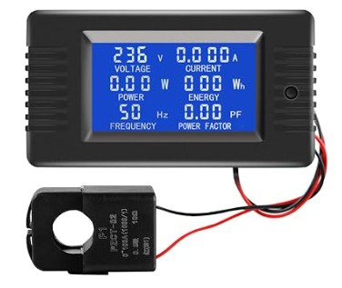

At Cynex Systems, we provide engineering-oriented solutions for industrial control panels, operator interfaces, electrical systems, and mechatronic applications. Control panel interfaces enable operators to interact with machinery, monitor operating conditions, issue commands, and manage equipment functions safely and efficiently. Depending on the application, these interfaces may include push buttons, selector switches, indicator lights, touchscreen displays, meters, keypads, and communication devices. Every industrial application has different requirements for operator access, environmental protection, functionality, and integration with control systems. Cynex Systems can help evaluate suitable interface components and configurations according to the machine's operating functions, electrical specifications, installation space, and budget. Where standard products do not fully meet project requirements, customized panel layouts, electrical circuits, interface assemblies, and integration solutions can also be considered.
Push Buttons, Selector Switches, and Indicator Lights
Push buttons, selector switches, and indicator lights are fundamental components of industrial control panels. They allow operators to start or stop equipment, select operating modes, acknowledge certain conditions, and identify machine status through visual signals. Available configurations vary in contact arrangements, voltage ratings, mounting dimensions, illumination, and environmental protection. Cynex Systems can help select suitable components and organize their functions according to the machine's operating requirements. We can also evaluate customized panel layouts and electrical connections to improve usability, simplify operation, and provide a practical solution for new equipment or existing machinery upgrades.
Human-Machine Interfaces (HMI) and Touchscreen Panels
Human-Machine Interfaces (HMIs) provide a visual and interactive connection between operators and industrial control systems. Depending on their capabilities, they can display operating parameters, alarms, process information, machine status, and adjustable settings. Touchscreen HMIs commonly communicate with PLCs, motion controllers, and other compatible devices to support centralized monitoring and control. Cynex Systems can help identify suitable HMI products based on display size, communication protocols, required functions, and environmental conditions. We can also assess their integration with existing controllers and electrical panels to support clear operator interaction and efficient machine operation.
Electrical Measurement and Status Monitoring Instruments
Industrial control panels may include digital meters, voltage and current indicators, temperature displays, counters, and other instruments for monitoring electrical or process conditions. These devices help operators observe system performance and identify conditions that may require attention. The appropriate instruments depend on the measured parameters, signal types, accuracy requirements, and installation environment. Cynex Systems can help evaluate suitable monitoring components and their compatibility with sensors, control circuits, and electrical equipment. Where necessary, customized measurement interfaces and panel arrangements can also be considered to meet specific industrial monitoring requirements.
Communication Interfaces and Industrial Connectivity
Communication interfaces allow control panels to exchange information with PLCs, motor drives, sensors, supervisory systems, and other industrial devices. Depending on the equipment, communication may use industrial Ethernet, serial connections, fieldbus systems, or other supported protocols. Appropriate interface selection is essential for compatibility, dependable data exchange, and effective integration across a machine or production line. Cynex Systems can help assess communication requirements, select compatible interface components, and evaluate wiring and connection arrangements for new or existing systems. Our approach considers the devices involved, required data exchange, installation conditions, and overall system complexity.
Customized Control Panels and Interface Assemblies
Some industrial applications require control panels designed around specific machinery, operating sequences, dimensions, or electrical requirements. Customized solutions may combine operator controls, indicator lights, measurement instruments, HMIs, terminal blocks, protective devices, and communication interfaces within a coordinated assembly. Depending on technical feasibility and project scope, Cynex Systems can help develop panel layouts, evaluate electrical circuit requirements, select suitable components, and coordinate interfaces between control units, motors, sensors, and other equipment. Our objective is to identify a practical, reliable, and cost-conscious configuration that supports convenient operation, effective monitoring, and integration with the complete industrial or mechatronic system.
Customized Engineering and Integration
Cynex Systems understands that an effective control panel interface must match the equipment it serves and the needs of the people operating it. Depending on the project, our engineering support may include:
Our goal is to help customers identify control panel interface solutions that meet their functional requirements, installation constraints, operating environment, and budget.
Whether you need individual panel components, an operator interface, a monitoring system, or a customized control panel assembly, Cynex Systems can help evaluate suitable options for your industrial application.
To help establish your requirements, please provide a description of the equipment, the required operator functions, available electrical supply, connected controllers and devices, panel dimensions, and budget, if known. Existing drawings, photographs, wiring diagrams, or component specifications can also support the initial assessment.
For additional products and services, including DC servo motors, stepper motors and drivers, control units, mechanical parts manufacturing, electrical circuit development, industrial equipment, and mechatronic projects, please explore the other relevant pages and links throughout our website.
Cynex Systems — Practical Control Interfaces, Customized Engineering, and Integrated Industrial Solutions.


